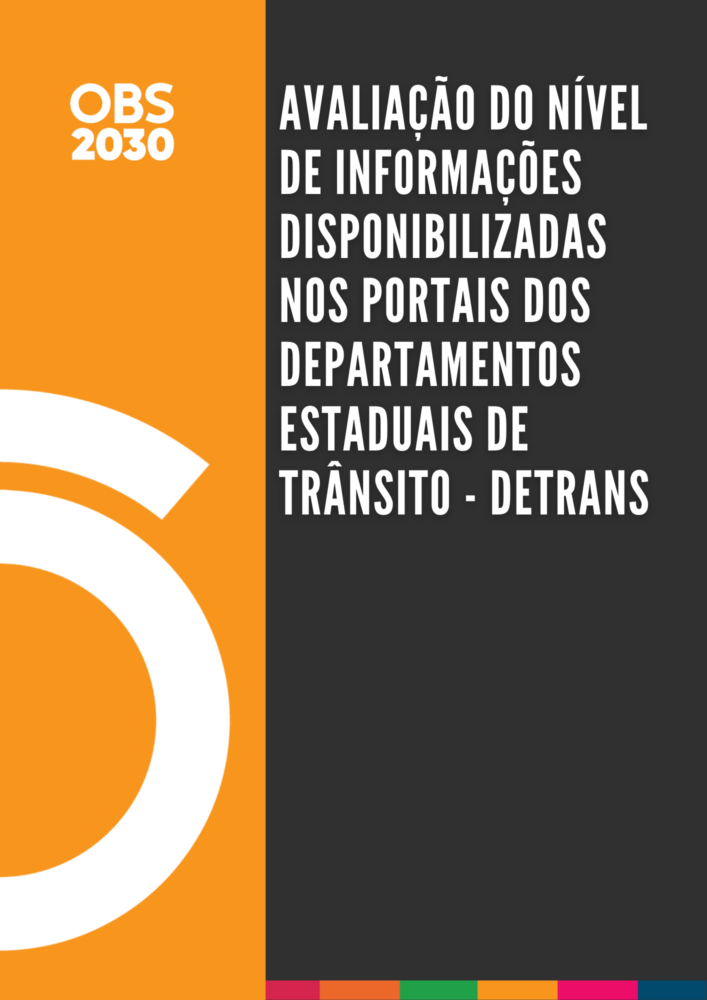

Avaliação do Nível de Informações Disponibilizadas nos Portais dos Departamentos Estaduais de Trânsito - Detrans
Ana Beatriz da Silva Marques ![]()
Dr. Jorge Tiago Bastos
Apresentação

O documento tem como principal conteúdo a avaliação do nível de informações disponibilizadas nos portais dos Detrans de todas as unidades da federação brasileira. Esta avaliação teve como propósito verificar o desempenho dos Departamentos Estaduais de Trânsito (Detrans) em relação à disponibilização de informações.
Essa é uma terceira versão do relatório realizado em 2020 pelo Observatório Nacional de Segurança Viária, também publicado como uma comunicação técnica no segundo Simpósio de Transportes do Paraná (2020). A elaboração de uma nova versão possibilita a análise da evolução dos portais dos DETRANs de cada estado, entre os anos de 2020, 2024 e 2025.
Nessa nova versão o relatório foi renderizado em html, possibilitando a visualização interativa dos resultados por tabelas, mapas e gráficos em um formato nativo para a web, com acesso direto através do site do Observatório (onsv.org.br).
O presente relatório é um produto do acordo de cooperação técnica entre o Observatório Nacional de Segurança Viária (ONSV) e a Universidade Federal do Paraná (UFPR).
Highlights
O objetivo principal foi avaliar o nível de informações disponibilizadas nos portais (sítios eletrônicos) dos Detrans de todas as unidades da federação brasileira, buscando classificar cada portal com uma nota de 0 a 10.
A avaliação foi baseada em sete categorias: (i) frota de veículos, (ii) condutores habilitados, (iii) infrações, (iv) sinistros de trânsito, (v) educação para o trânsito (campanhas, material educativo, regras de trânsito, etc.), (vi) atendimento ao público e (vii) centro de formação de condutores (CFCs).
Mais da metade dos portais de Detrans contêm informações de todas as categorias consideradas.
Nove portais não incluem dados sobre sinistros de trânsito e oito não incluem dados sobre infrações, mostrando que essas categorias apresentaram a menor disponibilização de informações.
Os Detrans dos estados de Sergipe, São Paulo e Espírito Santo atingiram os melhores resultados, com notas finais de 9,8, 9,8 e 9,5, respectivamente.
Os Detrans dos estados de Roraima, Tocantins e Piauí atingiram os piores resultados, com notas finais de 1,7, 2,4 e 2,4, respectivamente.
Entre 2024 e 2025, os portais de 19 Detrans apresentaram uma melhoria de desempenho, com aumento em suas notas finais.
Sobre o Observatório
O Observatório Nacional de Segurança Viária é uma instituição social sem fins lucrativos, dedicada a desenvolver ações que contribuam efetivamente para a redução dos elevados índices de ocorrências no trânsito brasileiro. Com esse objetivo, um grupo de profissionais multidisciplinares decidiu reunir todo o seu conhecimento, experiência e motivação em um único projeto grandioso e desafiador: mobilizar a sociedade em prol de um trânsito mais seguro. Como um dos principais think tanks na área de segurança viária, o Observatório se dedica a mobilizar e influenciar tanto os atores públicos quanto privados, com o objetivo de promover a mobilidade humana, segura e sustentável.
Sobre o relatório
Como citar
SARAIVA, J. P. M.; SANTOS, P. A. B. e BASTOS, J. T. Avaliação do Nível de Informações Disponibilizadas nos Portais dos Departamentos Estaduais de Trânsito - Detrans. Observatório Nacional de Segurança Viária e Universidade Federal do Paraná. 2025. Disponível em: https://onsv.org.br.
Licença de uso
Avaliação do Nível de Informações Disponibilizadas nos Portais dos Departamentos Estaduais de Trânsito - Detrans © 2025 por Observatório Nacional de Segurança Viária está licenciada sob CC BY-NC 4.0. Para ver uma cópia desta licença, acesse https://creativecommons.org/licenses/by-nc/4.0/.
Código-fonte
Todo o processo metodológico de coleta, transformação e visualização dos dados presentes nesse relatório estão disponíveis em um repositório do GitHub. Para acessar, entre em contato com onsv@onsv.org.br